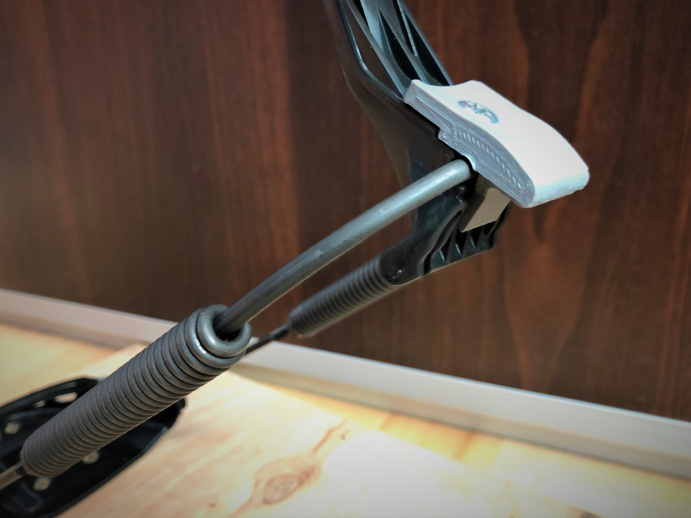
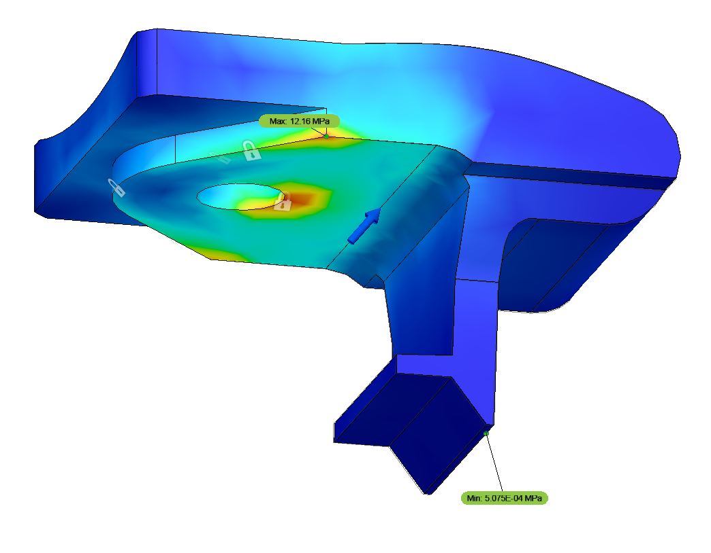

Tour-throw for Rottefella Chili
Feb 18, 2019 22:14 · 131 words · 1 minute read

Tour-throw is common name for simple way of loosening spring tension in telemark ski bindings, especially useful for long tours over flat terrains.
Soon after publishing replacement tour-throw heel levers for my G3 Targa Telemark Bindings on Thingiverse I've been asked to design and manufacture similar part to Rottefella Chili bindings, which do not come with such feature out of the box.
 Test part
Test part
By coincidence, I've been temporarily in possession of the exact binding model client was asking for, so there was no back-and-forth shipping required.
 Part in binding
Design was pretty straightforward, but required few iterations to ensure that under rapid disengagement, bottom joint won't bend and disconnect from slot in other half of heel lever, causing increasing loads and failure.
 Locating areas of stress concentration
Binding in action